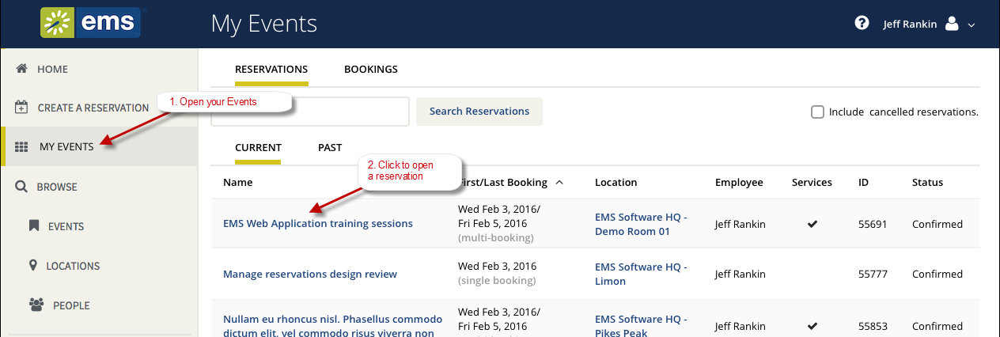

Tip: When you click to edit a Reservation or Booking, the page that opens depends upon the type of booking that you are editing—a booking for reserving a room, a booking for requesting a room, or a booking for services only.
This section guides you to work with bookings in the Reservation Details page on {{product_webapp}}, where you can view, add, change, or cancel services and attendees for a booking. For an overview, see Reservation Details. A reservation may contain multiple bookings, so the procedures below guide you in applying your changes to more than one booking within a reservation

|
|
Tip: When you click to edit a Reservation or Booking, the page that opens depends upon the type of booking that you are editing—a booking for reserving a room, a booking for requesting a room, or a booking for services only. |


|
Warning: Canceling a reservation will also cancel all bookings under the reservation. |


|
|
Tip: To cancel multiple bookings, click Cancel Bookings in the upper corner of your My Events list. |

Your MY EVENTS page refreshes and the booking is canceled.